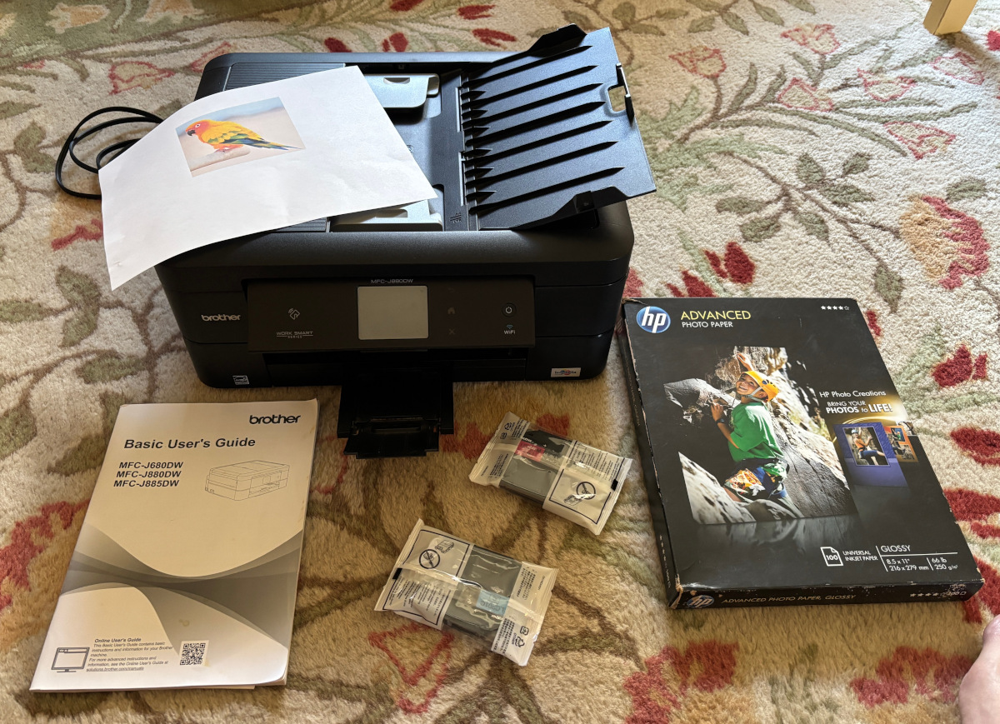

Photo-Printer/Copier/Scanner/Fax

Brother MFC-J880DW
- 2.7 inch touchscreen display.
- Automatic document feeder system and automatic duplex (2-sided) printing.
- Wireless, Ethernet, Wi-Fi Direct, NFC, USB 2.0.
- 100-sheet capacity paper tray can handle paper sizes up to as 8.5" x 14".
- Prints in black and white or color -- on plain paper, card stock, photo paper.
- Black-and-white speed: 12 PPM, Color speed: 10 PPM.
- Print Resolution: Up to 6000 x 1200 DPI.
- Scanning/Copying in color and black and white, flatbed and automatic document feeder.
Just bought a fresh 3-pack of color cartridges -- putting the Yellow
one into the printer. The other installed cartridges have some ink
left -- so you will have two spare.
Also includes most of a 100-pack of glossy photo paper.
Cash only.
More info: